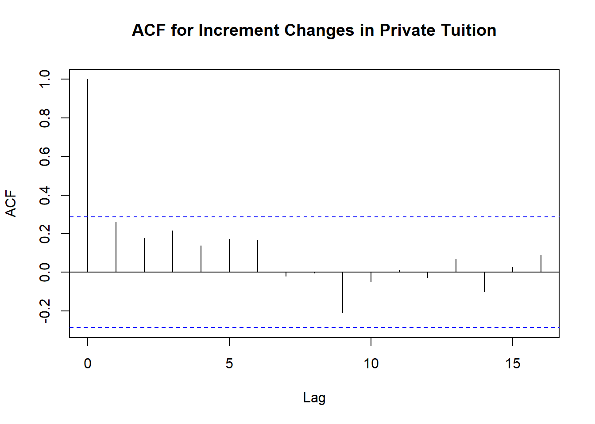
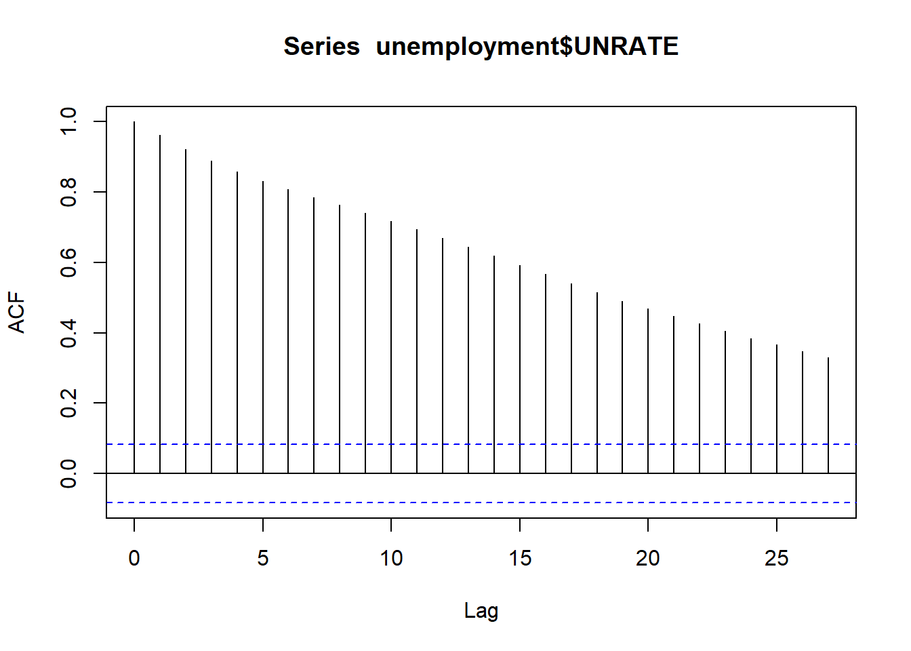
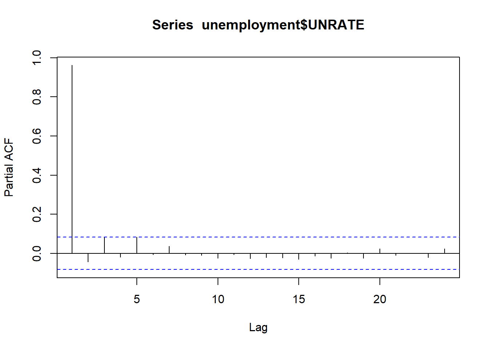
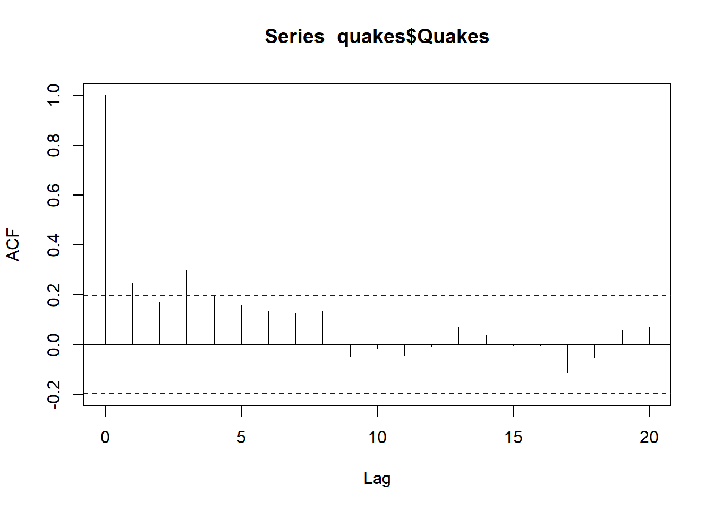
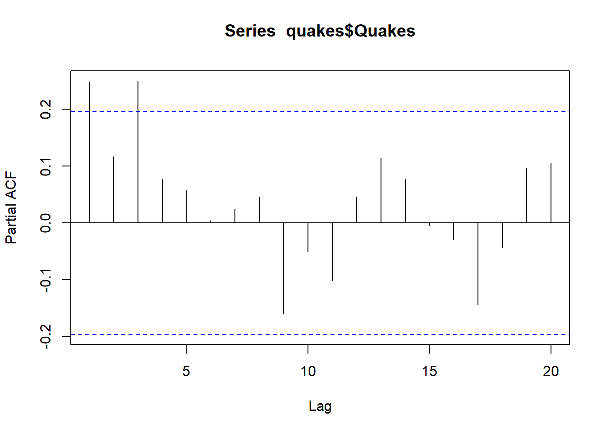
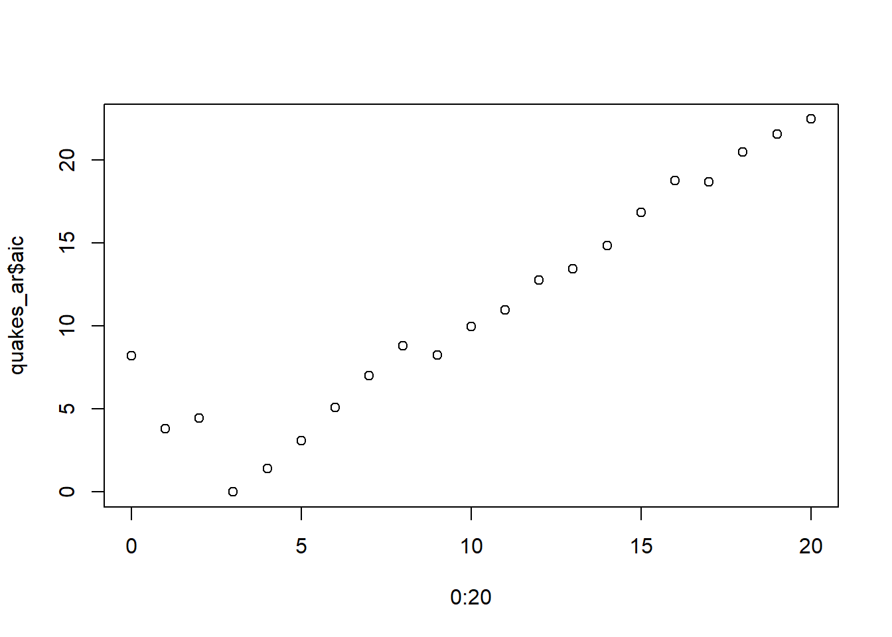

A random walk model assumes a very simple relationship between successive values of a time series, namely \[
Y_t = Y_{t-1} + \varepsilon_t
\] where \(\varepsilon_t\) is a sequence of iid random variables.
In some treatises on time series, you will see the noise term written in a slightly different way as \(\beta_0 + \varepsilon_t\) where \(\beta_0\) is the expected value of the noise and \(\varepsilon_t\) is a “mean centered” version of the noise - often referred to as a “white noise process”. Under this formulation, we can rewrite the defining equation for a random walk as \[
Y_t = \beta_0 + Y_{t-1} + \varepsilon_t
\] where \(E(\varepsilon_t)=0\).
This gives us an alternative visual method of seeing if a random walk is reasonable: if we plot the observations \(y_t\) against their lagged counterparts \(y_{t-1}\), we should see points scattered around a line with slope = 1.
This is roughly the case with the private tuition data. The plot below compares this expected line (black) with the SLM of \(y_t\) vs its lagged values (blue line). Note the use of the lead and lag function from dplyr which shift to the next and previous observations, respectively.
There may be other situations, however, where the dependence of \(y_t\) on its lagged value \(y_{t-1}\) are linear, but with a “regressive” slope of \(|\beta_1| < 1\) or where \(y_t\) may depend on other past values like \(y_{t-2},y_{t-3}\), etc. Such modifications lead to the definition of autocorrelation functions and autoregressive models.
Quick Note on \(Y\) vs \(y\):
Probabilists typically use capital letters (like \(Y\)) to denote random variables and lowercase letters (like \(y\)) for observed values of those variables. In statistics, though, that distinction often gets blurred, especially in applied contexts.
I’ll try to use \(Y_t\) when referring to the underlying stochastic model behind a time series, and \(y_t\) when referring to the actual observed values. That said, there may be times when the notation flips, depending on context or convention. Many textbooks don’t worry about it and just stick with \(y_t\) throughout, even when describing models like a random walk. But my probabilist training makes it hard not to reach for \(Y_t\) when talking about a stochastic process.
Stationarity revisited: autocorrelation functions
Last lecture, we made a brief note about processes which are “stable” in the sense that their mean/variance remain constant over time, citing a white noise process as the prototypical example of such stationary processes.
Well, we have to come clean about that.
Stationarity involves more than just mean and variance. It also concerns how values in the process relate to one another over time. Specifically, a process is said to be weakly stationary (or second-order stationary) if:
Its mean is constant over time, and
The covariance between \(Y_t\) and \(Y_s\) depends only on the time lag \(|t - s|\), not on the specific times \(t\) and \(s\) themselves.
In other words, the relationship between two observations depends only on how much time has passed between them, not when they occurred. For example, the covariance between \(Y_2\) and \(Y_4\) should be the same as the covariance between \(Y_4\) and \(Y_6\), but may be different than the covariance between \(Y_4\) and \(Y_7\) since the latter are three time units apart.
This idea is often formalized with the autocovariance function: \[
R_k = cov(Y_t,Y_{t-k})
\] or the more commonly used autocorrelation function: \[
\rho_k = corr(Y_t,Y_{t-k})
\] which has the advantage of being independent of units. This makes it easier to interpret and compare across different time series. We’ll mainly be focusing on the latter in these notes.
Two comments before we proceed. First, an autocorrelation function only makes sense if a process is stationary. Therefore, it doesn’t make sense to talk about the autocorrelation function of tuition, but it does make sense to talk about the autocorrelation of the year-to-year incremental changes in tuition (first order differences). Second, what one typically does is compute the autocorrelation function \(\rho\) for several different lags and then plot \(\rho_k\) vs \(k\). The acf function in R accomplishes this task. Let’s look at the acf for private tuition change scores.
rho=acf(na.omit(tuition$PrivateDiff),main="ACF for Increment Changes in Private Tuition")

This plot shows that the sample correlation between \(y_t\) and \(y_{t-k}\) is close to 0 for all values of \(k \geq 1\) as it should be for a sequence of iid random variables. The blue lines show 95% confidence intervals for where you would expect the autocorrelation values to lie if the time series consists of white noise and in our case, we can see that all the autocorrelations do indeed lie within this band. This lends further credence to our use of a random walk model for tuition.
In contrast, lets look at a time series of US unemployment going back to 19801. These can be loaded from the publicly available FRED (Federal Reserve Bank) database as follows:
Well COVID kind of fucked up stationary (amongst other things). But it otherwise looks pretty good. Let’s proceed to check out the acf:
rho_ur=acf(unemployment$UNRATE)

That is definitely not a white noice process! It looks like the correlations between lagged values decay as the size of the lag increases. This means this process has some “memory” of its past. Autoregressive models represent one class of possibilities for modeling such relationships.
Autoregressive Models
An autoregressive model of order 1 (referred to as an AR(1) model) is a generalization of both iid sequences and random walks in which we assume that \[
Y_t = \beta_0 + \beta_1 Y_{t-1} + \varepsilon_t
\] for some constants \(\beta_0,\beta_1\) where \(\varepsilon_t\) is a white noise process with mean 0 and variance \(\sigma^2\). Thus if \(\beta_1 = 1\), AR(1) is a random walk while if \(\beta_1 = 0\), then AR(1) is a sequence of iid random variables. Note that in order for the above process to make sense when \(t=1\), one must assume something about an initial distribution of possible values \(y_0\) (although this is more of a theoretical issue as you usually just start ticking at \(t=2\) in practice).
One way to check whether an AR(1) model is appropriate is to compare the autocorrelation function with \(\rho_1^k\), the \(k\)th power of the one-step autocorrelation2. Here is what this looks like for the unemployment data:
That looks pretty good! Gaining more confidence in an AR(1) here.
We can also be apply standard formulas for AR(1) process to obtain forecasts for future values using the heuristic \[
\hat{y} \pm 2*SE
\] where \(SE\) means the standard deviation of the prediction error (i.e. \(SD(y-\hat{y})\)). With an AR model, this is usually done using the “chain rule of forecasting3”, a fancy way of saying that given a current value of \(y_t\), we predict \[
\hat{y}_{t+1} = \hat{\beta}_0 + \hat{\beta}_1 y_t
\] and then use the result to predict \[
\hat{y}_{t+2} = \hat{\beta}_0 + \hat{\beta}_1 \hat{y}_{t+1}
\] and so on. If you want an algebra challenge, you can work out a formula for this by hand4. There is also a not-too-bad but not worth memorizing formula for the \(n\)-step error variance5. As usual, predict will do all this for you after you fit a model with the ar function.
Let’s see how all this looks for the unemployment data. We’ll train an AR(1) model using everything up until 2025 and then see how the predictions compare up to October, 2026.
An autoregressive model of order \(k\) (AR(k)) is similar to AR(1) except now we allow dependence on the \(k\) most recent observations of the time series. This can be formulated mathematically as \[
Y_t = \beta_0 + \beta_1 Y_{t-1} + \cdots + \beta_k Y_{t-k} + \varepsilon_t.
\] The question then becomes: how do we distinguish between AR(k) models?
The autocorrelation function does not do a good job of this because even in the AR(1) case, the correlation of \(y_t\) and the n-lag \(y_{t-n}\) is greater than 0 for all \(n\geq 1\) even though the model only specifies that \(y_t\) depends on \(y_{t-1}\) because by the “chain rule”, \(y_t\) will depend on \(y_s\) for all \(s < t\). What we need is some type of conditional correlation function which looks at how \(y_t\) depends on \(y_{t-n}\) after already accounting for its dependence on \(y_{t-1}\) or \(y_{t-2}\) or any other “intervening” values of the time-series. Ideally, we would like this function to be close to 0 for \(n>1\) if the time series follows an AR(1) model and in general, close to 0 for \(n > k\) if the time series follows an AR(k) model. Thus is born the partial autocorrelation function.
Although we will not get into the details of how to calculate partial correlation coefficients here6, let’s look at the result for our inflation bond data
ur_pacf=pacf(unemployment$UNRATE,lag.max =24)

Notice that only the lag-1 partial correlation lies outside of the error bars expected under white noise and hence, an AR(1) model is indeed a good candidate for this data.
To give an example of a time-series with longer lag, let’s look at a dataset of number of quakes per year with magnitude greater than 7:
Yeah, passes the control chart eyeball test for stationary. Let’s look at the acf and pcf:
acf(quakes$Quakes)

pacf(quakes$Quakes)

It looks like it might have spikes up until lag-3. You can check by letting R choose a “best” value of lag based on AIC7 by leaving out the order.max argument in your call to ar:
quakes_ar=ar(quakes$Quakes)quakes_ar
Call:
ar(x = quakes$Quakes)
Coefficients:
1 2 3
0.1906 0.0616 0.2499
Order selected 3 sigma^2 estimated as 16.05
Yep, order 3 was best! You can also plot the aic values to see how much of a min it is
plot(0:20,quakes_ar$aic)

Looking at this, I would say the choice of 3 is pretty convincing. Here are the predictions for the next 10 years (note the dataset ends in 2015):
According to the usgs.gov site, the number of 7+ quakes in 2016-2020 were: 16,7,17,10, and 9, all of which appear to be within the error bounds. The 2016 prediction is spot on and the model does oddly predict a dip in 2017. Creepy.
Exercise
The FRED database tracks the exchange rates between the US dollar and foreign currencies. For example, the commands below will load the daily exchange rates going back to 2020
Not to be confused with Dr. Chain’s rule in calculus.↩︎
To save you needing AI, the answer is \[
\hat{y}_{t+n} = \beta_0 \sum_{j=0}^{n-1} \beta_1^j + \beta_1^k y_t.
\]↩︎
\[
SE_n=Var(Y_{t+n} - \hat{Y}_{t+n}) = \sigma^2 \sum_{j=0}^{n-1} \beta_1^{2j}.
\] where the the white noise variance \(\sigma^2\) can be estimated using the sample residual variance from the fitted AR(1) model. Maybe I’ll put a calculation in the supplement someday when I am really bored. Like, REALLY bored.↩︎
As an example, here’s how you would compute the lag-2 partial correlation. First, regress \(Y_t\) on \(Y_{t-1}\) and get residuals \(e_t\). Second, regress \(Y_{t-2}\) on \(Y_{t-1}\) and get the residuals \(e_{t-2}\). Finally, calculate the correlation between \(e_t\) and \(e_{t-2}\). Since both residuals have the effect of \(Y_{t-1}\) removed, we are now looking at a more direct correlation between \(Y_t\) and \(Y_{t-2}\)↩︎
One could also use other complexity metrics or cross-validation.↩︎